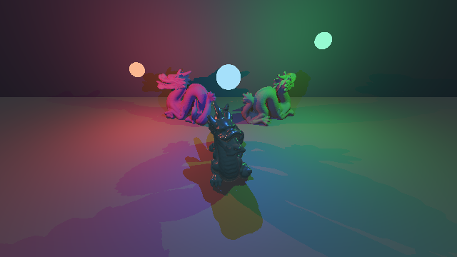
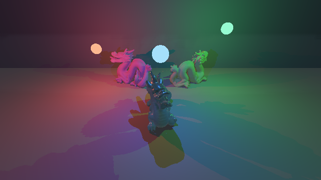

Agent Enhanced Projects
Move project memory out of chat
Without durable governance
- Decisions disappear between sessions
- Standards drift across agents
- Handoffs depend on model memory
- Prompts and review work repeat
With AEP
- The repository owns instructions and decisions
- Standards and skills are version-pinned
- Routers keep working context bounded
- Deterministic gates produce evidence
AEP-routed implementation
A decision became an enforceable contract
Routed inputs
- Math: rotations, projection, robustness
- Rust: invariants and property tests
- WGPU: host and Vulkan lifecycle
- WGSL: shader and layout contracts
Enforced outcome
- Accepted coordinate and pose semantics
- Normalized dual quaternions
- Analytic reverse-Z projection
- Matrix-ban gate: 0 findings
AEP evidence contract
Claims require controlled, executable proof


Fixed state, one mode delta
- Required peak:
4/255 - Observed peak: 50/255
- Changed ROI pixels:
3,846 - Repeated fixed-adapter PNG hashes match
- 36 CPU tests; Vulkan: RTX 4070 + Radeon 610M
Agent development outcomes
Less prompt management.
More durable proof.
Developer experience
- Less repeated setup
- Smaller working context
- Quieter diagnostic logs
- Explicit owner approval
Project results
- Decisions survive sessions
- Specialists stay bounded
- Drift fails early
- The same gates governed this local voice workflow
Narration take